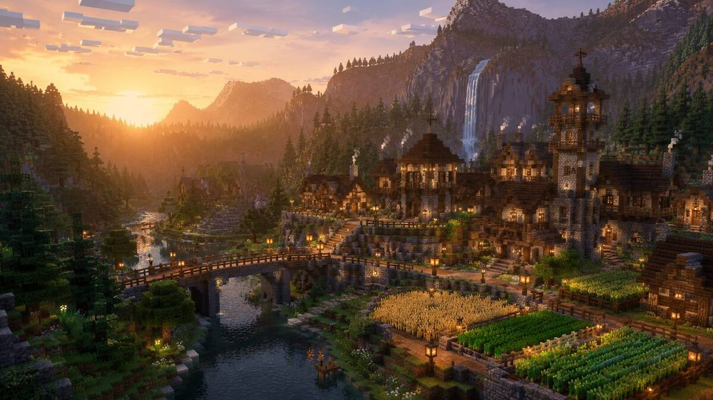

Dein Platz im Survival
Erkunde die Welt, sichere dein Zuhause mit Claims und baue in deinem eigenen Tempo.
Survival ansehenDEUTSCHER MINECRAFT-SERVER · JAVA & BEDROCK
Survival ist unser Zuhause. Dazu kommen Clans, eigene PvP-Systeme und ein Bot, der dich beim Trainieren fordert. Such dir aus, worauf du heute Lust hast.
Kostenlos mitspielen. Kein Modpack nötig.

MEHR ALS BLÖCKE ABBAUEN
Allein anfangen, mit Freunden weitermachen. Oder jemanden finden, mit dem aus dem kleinen Haus eine ganze Stadt wird.
Erkunde die Welt, sichere dein Zuhause mit Claims und baue in deinem eigenen Tempo.
Survival ansehenFindet Mitspieler, arbeitet an gemeinsamen Projekten und gebt eurem Clan ein Zuhause.
Mehr über ClansFordere jemanden zum Duell heraus oder übe gegen den Trainings-Bot. Für zwischendurch gibt es die Knockback-Arena.
PvP kennenlernenVerkaufe im Auktionshaus, erfülle Orders und verdiene Coins mit deinem Spielstil.
Handel verstehenTägliche und wöchentliche Quests bringen Fortschritt. Es gibt einen kostenlosen und einen Premium-Pfad.
Pass ansehenVote-Punkte sammelst du beim Voten. Damit bekommst du Cosmetics, Pets und Plushies.
So funktioniert VotenViele unserer Systeme entwickeln wir selbst. Nicht, weil alles komplizierter werden soll, sondern damit wir auf eure Ideen und Probleme reagieren können. Wenn dir etwas fehlt oder nicht richtig funktioniert, sag uns Bescheid.
DEIN ERSTER ABEND
Server hinzufügen, kurz die Regeln lesen und loslegen.